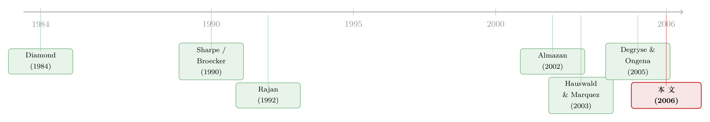

信息这把武器，为什么越磨越亏？——把「螺旋桨」装进信贷竞争
本文读的是 Hauswald & Marquez (2006, Review of Financial Studies)：当一家银行收集借款人的私有信息时，它其实在同时做两件事——既给对手制造「逆向选择」的威胁来软化价格战，又借这点信息去「挖」对手的客户。把这两个动机放进同一个空间竞争模型里，作者推出了一串反直觉的结论：竞争越激烈，银行越不愿投钱去甄别，于是利率更低、但放贷决策更糟；而且从社会角度看，银行在筛选上投得太多了。
1 一个被讲滥了、却被讲反了的故事
金融中介存在的理由，教科书里写得明明白白：银行替分散的储户「代为监督」借款人，生产出别人生产不出来的信息，从而让资金流向真正值得的项目。这是 Diamond (1984)、Ramakrishnan & Thakor (1984)、Allen (1990) 一脉相承的经典叙事——信息生产是好事，银行越能甄别，信贷市场就越有效率。
这套说法在「一家银行 vs. 一群借款人」的世界里没什么问题。可现实里的银行从来不是只面对借款人，它还面对别的银行。一旦把竞争对手请进画面，一个被长期忽略的问题就冒出来了：银行掏钱去做尽职调查，到底是为了「把钱配给好企业」，还是为了在和同行的缠斗里占上风？
这正是 Hauswald 和 Marquez 想钉死的那颗钉子。他们的核心主张只有一句话，但很硬：
银行获取专有信息，服务于双重目的——其一，制造「逆向选择」威胁，让对手不敢压价，从而软化价格竞争；其二，凭借这点信息把对手的客户「挖」过来，扩张自己的地盘。
一旦你接受「信息是一件竞争武器」这个设定，后面所有反直觉的结论都会顺理成章地长出来。我们一步步看。
2 把「专业度」翻译成「距离」
首先要解决的，是怎么把「银行的甄别能力有强有弱」写进模型。作者的处理非常漂亮：用 银行—借款人距离 (bank-borrower distance) 来刻画信息生产的质量。
设一连续统的借款人，质量为 M，均匀分布在一个周长为 1 的圆环上。每个借款人手里有个要花 \$1 的项目，类型 高 (\(\theta=h\)) 或 低 (\(\theta=l\))：高质量项目确定产出 \(R>0\)，低质量项目必然血本无归、产出 0。类型 \(\theta\) 谁都看不见，但市场知道高质量出现的概率是 \(q\in(0,1)\)，并且 \(qR>1\)——也就是说，事前发一笔贷款是有效率的。
N 家银行等距地站在圆环上竞争，分三阶段博弈：
- 进入与投资：决定要不要进场，以及在甄别技术上投多少钱
I； - 甄别：对某个申请人要不要做信用评估；
- 报价：同时报出毛利率 \(r\ge 0\)，或干脆不报。借款人最后挑利率最低的那家接受。
甄别按每位借款人花成本 \(c>0\)，得到一个信号 \(s\in\{l,h\}\)，其质量 \(f\) 定义为信号说对话的概率：
$$f = \Pr(s=h\mid\theta=h) = \Pr(s=l\mid\theta=l)$$
接着，一个自然的问题是：这个 \(f\) 取决于什么？作者给了它一个干净的形式——质量随投资 I 上升，随距离 x 下降：
$$f(x) = \frac{1+I}{2} - I\,x, \qquad x\in\left[0,\tfrac{1}{2}\right]$$
距离之外 \(f\) 就退化成 $1/2$（纯抛硬币，毫无信息）。投资的成本是二次的 \(\tfrac{1}{2}I^2\)，外加一笔进入市场的固定成本 T。
这套设定的妙处在于：x 可以解读成地理距离，也可以是行业陌生度、产品线生疏度。银行在自己的「主场」(\(x\) 小) 信息优势大，越往外伸 (\(x\) 大) 越是「客场作战」，甄别能力越差。作者特意指出，这和 Acharya et al. (2004) 的证据吻合——银行扩张进新行业、新市场时，风险更高、信息能力被侵蚀。这就把传统 Salop (1979) 那种「运输成本差异化」换成了内生的信息差异化：产品差异不是天上掉的，而是银行自己投资投出来的。
3 报价桌上的「赢家的诅咒」
有了信息技术，第三阶段的报价博弈就成了关键。这里作者借用了一个经典结论（Broecker 1990; Engelbrecht-Wiggans et al. 1983）：当两家相邻银行，一家有信息、一家没有，对同一个借款人竞价时，纯策略均衡不存在——只有唯一的混合策略均衡。
直觉是「赢家的诅咒」式的：没信息的银行一旦报了个低价抢到客户，往往意味着有信息的对手早就看出这是个坏借款人、主动让给了它。于是无信息的银行不敢乱压价。Proposition 1 把这件事钉死了：无信息的银行只能打平 (break even)，有信息的银行赚正利润，其事前期望利润为
这个式子值得盯一会儿。利润对信息量 \(f(x)\) 是线性的：信息越准，租金越高。而且它随 \((1-q)\) 上升——借款人池子越糟，知情银行反而越赚，因为这时候「能甄别」这件事才更要命。
由此 Proposition 2 推出：随着 \(f\) 上升，高、低质量借款人付的期望利率都上升（\(\partial\mathbb{E}[r\mid\theta,\text{offer}]/\partial f>0\)），同时无信息银行报价的概率下降（\(\partial\varphi/\partial f<0\)）。再链式法则一推，Corollary 1 给出一个可直接拿去检验的预测：
离知情银行越远的借款人，付的利率越低：\(\partial\mathbb{E}[r\mid\theta,\text{offer}]/\partial x<0\)。
为什么？因为离得远，银行信息优势小，那个「逆向选择」威胁就弱，无信息的对手敢更凶地压价——客户反而沾光。Degryse & Ongena (2005) 的实证恰好对上：贷款利率随「企业到放贷行的距离」下降、随「企业到竞争行的距离」上升。Degryse & Van Cayseele (2000) 那条「利率随关系时长上升」的发现也吻合——把 \(x=x(t),\,x'<0\) 一代入，距离就成了关系久期的代理。
（顺带一提，这种「信息让利率更高、还可能算反了方向」的张力，在专业化放贷里也被重新审视过，可参见《信息越多，利率反而越低？》。）
4 真正关键的一步：把「投资」当成抢地盘
到这里都还只是「给定信息，怎么报价」。但真正关键的一步在第三节：银行在第一阶段决定投多少 I，是为了什么？
作者先证 Lemma 1：均衡里每个借款人至多被一家银行甄别。因为如果两家都去筛同一个人，竞争会把利润压到零（除了信息最强那家）。于是每家银行 n 只会甄别到一个最远距离
$$\hat{x}_n = \min\left\{\frac{1}{2}\,\frac{(1-q)I - c}{1-q},\; \tilde{x}_n\right\}$$
其中 \(\tilde{x}_n=\max\{x: f_n(x)\ge f_{n+1}(\tfrac{1}{N}-x)\}\) 是它相对邻居仍占信息优势的边界。这个 \(\hat{x}_n\) 越大，银行能「圈」住的客户越多——而它随投资 I 上升、随银行数 N 下降。
于是模型告诉我们：每家银行其实在做两种生意。在 \(\hat{x}_n\) 以内，是基于私有信息的关系型贷款 (relationship lending)，圈出一块「自留地」收租；在 \(\hat{x}_n\) 以外，是无信息基础上的交易型贷款 (transactional lending)，打平而已。投资 I 的真正用途，是把那块自留地撑大、把对手的客户挖过来。
但所有银行都这么想。于是反转出现了——
5 反转：竞争越激烈，越不愿磨刀
既然投资是为了抢地盘，而对手也在抢，那么当行业里银行变多（N 上升、竞争加剧）时会发生什么？
作者的答案分两层，环环相扣：
- 第一层：竞争上升压低了每家银行的租金，于是降低了它们生产信息的总体激励——
I下降。 - 第二层，也是反直觉的地方：每家银行
I一降，它手里的私有信息就变少，那个加在对手头上的「逆向选择」威胁也随之变弱。于是大家敢更凶地压价，利率进一步走低；但与此同时，信息生产变少意味着银行更容易在放贷上犯错——把钱发给了坏企业，或把好企业拒之门外。
一句话：竞争加剧 → 信息投资下降 → 利率更低，但信贷配置更没效率。低利率和坏决策是同一枚硬币的两面。这和「竞争天然改善市场」的朴素直觉正好拧着来。（关于「更激烈竞争 / 更先进技术」未必带来更好结果，作者团队在另一篇里也有专门讨论，参见《两种技术，两种命运》。）
6 福利的暗算：他们磨刀磨得太多了
最狠的一刀在福利分析。从社会角度看，信息当然有用——它把钱配给有信用的人。可作者证明：银行在甄别上投入的资源超过了社会最优。
为什么会过度投资 (overinvestment)？因为每家银行投钱都是为了从对手嘴里抢市场份额。可所有银行都采取同样的策略，结果在均衡里谁也没真正扩大自己的自留地——这是一场典型的囚徒困境式军备竞赛。大家都在磨刀，刀磨得锃亮，地盘却没变大，磨刀的钱白花了。
这条结论的政策含义相当颠覆：限制银行投资于信息的政策，反而可能提高社会福利，因为它砍掉了这场内耗。这和「信息生产多多益善」的传统观点几乎是对着干的。
7 于是，并购成了「最优反应」
最后一块拼图是行业整合。如果两家银行合并、能跨分支机构协调各自的甄别活动，会怎样？
作者证明：合并后的银行会主动削减信息投资——因为合并内部化了原本互相抢客户的内耗，不必再拼命磨刀。可这一削减，就给留在外面的独立银行腾出了空间：它们能从合并实体手里抢走份额、提高自己的利润。于是出现一个有意思的格局——独立银行从对手的合并里获益。
但故事没完。既然合并能省下无谓的内耗、又能让对手占便宜，那么独立银行的最优反应，恰恰是自己也去找个合并伙伴。于是合并会像多米诺一样推进，把全行业的过度投资一轮轮削下去。这就给 Berger et al. (1999) 记录的那波银行并购潮，提供了一个纯粹源于信息策略的解释：并购未必是为了规模或市场势力，可能只是「信息军备竞赛」走到尽头的自然收敛。而且从政策看，并购竟可能有削减浪费性信息投资的社会效益。
8 文献脉络
把这条线索拎清楚，能更好地看出本文站在哪儿。
最早，金融中介理论关心的是「银行为什么存在」——Diamond (1984) 的代为监督、Allen (1990) 的信息生产，奠定了「信息是好事」的基调。接着，一支文献开始把信息不对称的竞争后果写进来：Sharpe (1990) 和 Rajan (1992) 指出关系银行会在再融资阶段「套牢」借款人、约束竞争；Broecker (1990) 和 Riordan (1993) 则警告，独立甄别下的竞争可能反而恶化贷款质量（赢家的诅咒）。

然后，最贴近本文的一支，是把「距离 / 专业度」引入甄别能力：Almazan (2002) 让银行的监督专长随距离衰减，Gehrig (1996, 1998) 关注信息生产激励，Winton (1999) 讨论专业化 vs. 分散化。但这些工作都没有把信息生产内生化为「抢市场份额的工具」，也没有由此内生出行业结构。Hauswald 和 Marquez 自己 2003 年的 RFS 论文已经在信息技术与竞争的关系上铺了路。本文 (2006) 的位置，就是把「信息作为竞争武器 → 内生差异化 → 内生并购」这条逻辑链一次性补全，并落到福利与政策上。它在实证上还前瞻地呼应了 Degryse & Ongena (2005)、Petersen & Rajan (2002) 关于「距离仍然重要」的发现。
评论与延伸（Q&A + 研究方向）
(a) 几个可能的疑问
Q：「信息生产是好事」是教科书共识，本文凭什么说银行投得太多？
关键在于把竞争对手请进了画面。Diamond (1984) 那类模型里只有一家银行，信息纯粹用于「配置资金」；本文里信息还多了一个用途——从对手手里抢份额。当所有银行都为抢份额而投资，均衡里份额却没净增加，这部分投资就是纯内耗。所以「过度」是相对于社会最优而言，不是说信息没用。
Q：「竞争加剧反而让放贷更没效率」会不会只是这个圆环模型的特殊产物？
它确实依赖两个机制：一是租金下降压低信息投资，二是信息变少削弱了逆向选择威胁、让大家更敢压价。这两条在任何「信息靠投资内生、且信息能软化竞争」的框架里都成立，并不限于 Salop 圆环。但量级和「利率降多少、坏账增多少」的具体权衡，确实和函数形式（线性 \(f(x)\)、二次成本）有关。
Q：为什么有信息的银行能赚租金，无信息的只能打平？这不是说信息能凭空变钱吗？
不是凭空。无信息银行面对「赢家的诅咒」——它抢到的，往往是知情对手主动放弃的坏借款人，所以它必须把报价压到打平、不敢索取租金。而知情银行能把坏借款人滤掉、只对好借款人在较高利率上放贷，\(\mathbb{E}[p_i]=(1-q)[2f(x)-1]\) 这块租金正是它信息优势的回报。
Q：模型说「每个借款人至多被一家银行甄别」，可现实里企业常有多家银行关系，这冲突吗？
不冲突。Lemma 1 说的是甄别（投入成本做评估）至多一家；但无信息的对手仍可能以一定概率 \(\varphi\) 报出竞争性报价。接受这种报价，就被解读为「发展第二家银行关系」。Detragiache et al. (2000) 发现美国近一半 500 人以下的小企业只有一家银行关系，但也有很多企业从多家借——和模型一致。
Q：距离越远利率越低，可这不会让银行不愿服务远处客户吗？
会，而且这正是模型的另一面：远处借款人利率低，是因为银行信息优势小、被对手压价；同时银行对远处客户的甄别更不准，放贷决策也更易出错。所以「低利率」和「低效率」在远端是绑在一起的，不是免费的午餐。
Q：把并购说成「信息军备竞赛的收敛」，会不会忽略了市场势力这个更直接的动机？
这是诚实的边界。本文的贡献是证明即使没有市场势力或规模经济动机，纯信息策略也足以驱动并购，从而提供一个被忽视的渠道。它不否认市场势力同时在起作用，只是说不必依赖它来解释整合潮——这也让模型的福利结论（并购可能削减浪费）更干净。
(b) 几个可能的研究问题与提案
1. 把「信息军备竞赛」搬到公司债承销 / 信用研究上
【经济故事】本文讲的是贷款甄别，但同样的逻辑也许适用于债券承销商或卖方信用分析：承销商投入研究是为了软化竞争、还是抢发行人？竞争加剧是否压低了信用研究的投入、进而恶化定价质量？ 【可行性】中。可用 Mergent FISD 的承销商身份 + TRACE 的二级流动性 / 定价误差，识别上可借「承销商所在地与发行人距离」「行业专长集中度」作为信息能力的代理。难点是把「研究投入」量化。
2. 外资银行进入与本地信息投资的此消彼长
【经济故事】本文预测竞争（
N上升）压低信息投资。外资 / 跨州银行进入是一个干净的「N 冲击」，可检验本地银行是否因此削减软信息生产，导致小企业贷款质量下滑。 【可行性】高。美国跨州分行放开（Riegle-Neal）提供交错的准实验，可用边界断点 + 双重差分 (DiD)。这与《在地图上画一条线》的设计思路相通。
3. 银行并购后「协调甄别」的直接证据
【经济故事】模型的关键机制是合并行跨分支协调、削减信息投资。能否在并购后看到被并购分支的甄别强度（拒贷率、贷款审查时长、软信息使用）下降，而独立竞争对手在同一市场抢到份额、利润上升？ 【可行性】中。需要分支层面的贷款审批数据（如 CRA 小企业贷款、或某国信贷登记），识别上用并购事件 + 周边独立行作对照。数据可得性是主要约束。
4. 把「距离—利率」预测放到公司债二级市场流动性上
【经济故事】本文预测离知情方越远，信息优势越小、竞争越强。在债券做市里，能否把「交易商对某发行人的专长距离」映射到买卖价差与流动性？专长越近，价差越宽（信息租金），但流动性提供越稳。 【可行性】中。TRACE + 交易商身份可识别专长集中度；难点是分离「信息租金」与「库存成本」两种价差来源。
5. 过度投资的福利量级到底有多大？
【经济故事】本文定性地说银行在甄别上过度投资，但没给量级。一个结构估计能回答：限制信息投资的政策，究竟能挽回多少福利？这对「数据 / 征信监管」有直接含义。 【可行性】低到中。需要校准 \(q,R,c,T\) 与 \(f(x)\) 的函数形式，数据上可借征信查询频率、尽调成本的行业基准；识别假设较强，但作为政策模拟有价值。
我的判断
这篇论文最漂亮的地方，是用一个极简的设定（圆环 + 距离衰减的信息技术）把「信息作为竞争武器」这件事讲到了底，并由此长出一串环环相扣、且大多可检验的预测：距离—利率的符号、竞争—投资—效率的反向链条、以及并购作为整合的最优反应。它真正的贡献不在某一条结论，而在重新定义了「银行生产信息」的性质——从「公共品式的好事」变成「带负外部性的军备竞赛」。这个视角的转换，是后来很多关于金融科技、征信共享、数据竞争研究的思想源头。
要说对识别的担忧，本文是纯理论，谈不上经验识别，但它给经验工作埋了两个隐患：其一，「距离」在数据里同时代理了信息能力、关系久期、企业透明度（大/老企业离得远），这几者纠缠在一起，想干净地检验「信息渠道」并不容易；其二，「过度投资」是相对于一个社会计划者基准而言的，这个基准本身依赖函数形式，换个成本函数量级会变。
后续我最想看到的，是把这套「信息军备竞赛」逻辑量化出来：在一个有真实信贷登记数据的国家，估计银行甄别投入对竞争强度的弹性，再算一算「限制信息投资」的政策到底能挽回多少福利——毕竟在征信数据日益集中、监管开始讨论「数据该不该共享」的今天，本文二十年前那句「约束银行投资信息或许能提高福利」，听起来格外有现实回响。
参考文献
Allen, F. (1990). The Market for Information and the Origin of Financial Intermediation. Journal of Financial Intermediation 1, 3–30.
Almazan, A. (2002). A Model of Competition in Banking: Bank Capital vs. Expertise. Journal of Financial Intermediation 11, 87–121.
Berger, A., R. Demsetz, and P. Strahan (1999). The Consolidation of the Financial Services Industry: Causes, Consequences, and Implications for the Future. Journal of Banking and Finance 23, 135–194.
Broecker, T. (1990). Credit-Worthiness Tests and Interbank Competition. Econometrica 58, 429–452.
Degryse, H., and S. Ongena (2005). Distance, Lending Relationships, and Competition. Journal of Finance 60, 231–266.
Degryse, H., and P. Van Cayseele (2000). Relationship Lending within a Bank-Based System: Evidence from European Small Business Data. Journal of Financial Intermediation 9, 90–109.
Diamond, D. (1984). Financial Intermediation and Delegated Monitoring. Review of Economic Studies 51, 393–414.
Detragiache, E., P. Garella, and L. Guiso (2000). Multiple Versus Single Banking Relationships: Theory and Evidence. Journal of Finance 55, 1133–1161.
Hauswald, R., and R. Marquez (2003). Information Technology and Financial Services Competition. Review of Financial Studies 16, 921–948.
Hauswald, R., and R. Marquez (2006). Competition and Strategic Information Acquisition in Credit Markets. Review of Financial Studies 19(3), 967–1000.
Rajan, R. (1992). Insiders and Outsiders: The Choice between Informed and Arm's-Length Debt. Journal of Finance 47, 1367–1400.
Riordan, M. (1993). Competition and Bank Performance: A Theoretical Perspective. In C. Mayer and X. Vives (eds.), Capital Markets and Financial Intermediation, Cambridge University Press.
Salop, S. (1979). Monopolistic Competition with Outside Goods. Bell Journal of Economics 10, 141–156.
Sharpe, S. (1990). Asymmetric Information, Bank Lending and Implicit Contracts: A Stylized Model of Customer Relationships. Journal of Finance 45, 1069–1087.